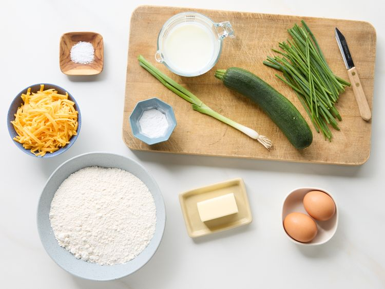
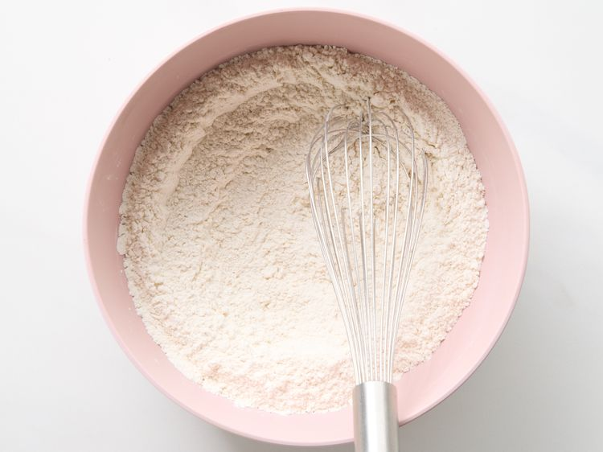
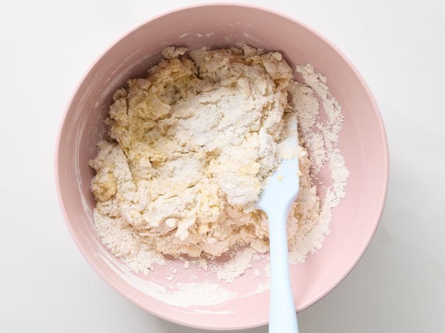
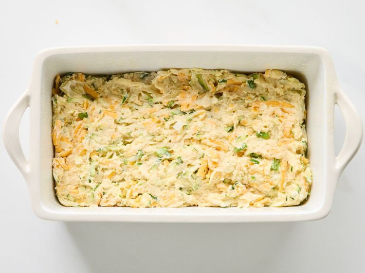
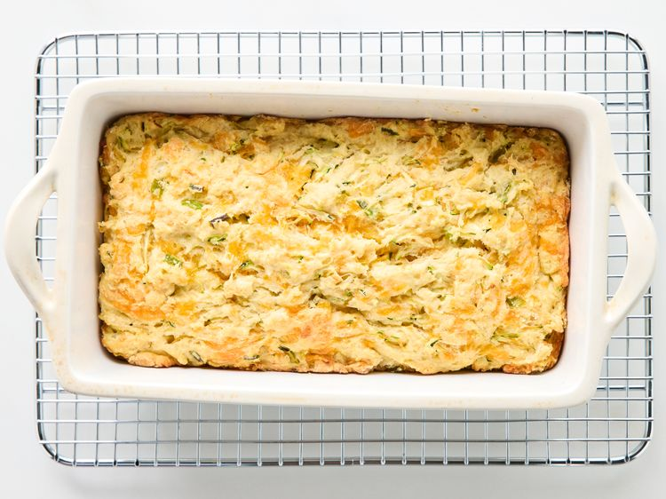
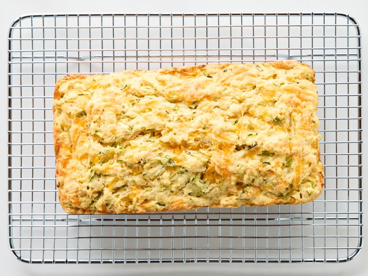

Home
Cheddar Zucchini Bread
This Cheddar zucchini bread is a great way to use extra zucchini in the summer months. It tastes a bit like a
cheesy biscuit with a crisp crust and a moist interior
Ingredients
- 1 medium zucchini
-
2 cups all purpose flour
-
2 teaspoons baking powder
-
1/2 teaspoon salt
-
1/2 cup buttermilk
-
2 large eggs
-
1/4 cup butter, melted
-
1 cup shredded Cheddar cheese
.
-
1 tablespoon finely chopped green onions
-
1 tablespoon chopped fresh chives
Directions
- Gather all ingredients. Preheat the oven to 350 degrees F (175 degrees C). Coat 9x5-inch loaf pan with
cooking spray.

- Coarsely shred zucchini. Wrap shredded zucchini in a clean kitchen towel or cheesecloth. Squeeze well and
discard excess liquid. Set aside.
- Whisk together flour, baking powder and salt in a large bowl.

- Whisk together buttermilk and egg in a bowl. Stir in melted butter
- Stir buttermilk mixture into dry ingredients, being careful not to overmix.

- Fold in shredded zucchini, cheese, green onions and chives until combined (batter will be thick).
- Spread batter evenly into the prepared pan.

- Bake in the preheated oven until golden brown and a toothpick inserted into the center comes out clean, 55
to 60 minutes. Allow bread to cool in the pan for 15 minutes.

- Remove from pan and cool completely on a wire rack.
